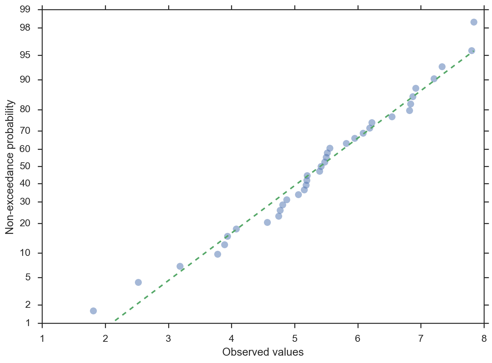
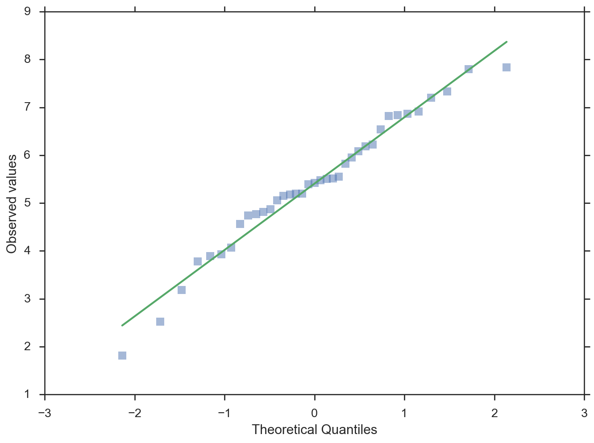

ThevizAPI
viz API Reference¶
-
probscale.viz.probplot(data, ax=None, plottype='prob', dist=None, probax='x', problabel=None, datascale='linear', datalabel=None, bestfit=False, return_best_fit_results=False, estimate_ci=False, ci_kws=None, pp_kws=None, scatter_kws=None, line_kws=None, **fgkwargs)[source]¶ Probability, percentile, and quantile plots.
Parameters: data : array-like
1-dimensional data to be plotted
ax : matplotlib axes, optional
The Axes on which to plot. If one is not provided, a new Axes will be created.
plottype : string (default = ‘prob’)
Type of plot to be created. Options are:
- ‘prob’: probabilty plot
- ‘pp’: percentile plot
- ‘qq’: quantile plot
dist : scipy distribution, optional
A distribtion to compute the scale’s tick positions. If not specified, a standard normal distribution will be used.
probax : string, optional (default = ‘x’)
The axis (‘x’ or ‘y’) that will serve as the probability (or quantile) axis.
problabel, datalabel : string, optional
Axis labels for the probability/quantile and data axes respectively.
datascale : string, optional (default = ‘log’)
Scale for the other axis that is not
bestfit : bool, optional (default is False)
Specifies whether a best-fit line should be added to the plot.
return_best_fit_results : bool (default is False)
If True a dictionary of results of is returned along with the figure.
estimate_ci : bool, optional (False)
Estimate and draw a confidence band around the best-fit line using a percentile bootstrap.
ci_kws : dict, optional
Dictionary of keyword arguments passed directly to
viz.fit_linewhen computing the best-fit line.pp_kws : dict, optional
Dictionary of keyword arguments passed directly to
viz.plot_poswhen computing the plotting positions.scatter_kws, line_kws : dict, optional
Dictionary of keyword arguments passed directly to
ax.plotwhen drawing the scatter points and best-fit line, respectively.Returns: fig : matplotlib.Figure
The figure on which the plot was drawn.
result : dict of linear fit results, optional
Keys are:
- q : array of quantiles
- x, y : arrays of data passed to function
- xhat, yhat : arrays of modeled data plotted in best-fit line
- res : array of coeffcients of the best-fit line.
Other Parameters: color : string, optional
A directly-specified matplotlib color argument for both the data series and the best-fit line if drawn. This argument is made available for compatibility for the seaborn package and is not recommended for general use. Instead colors should be specified within
scatter_kwsandline_kws.Note
Users should not specify this parameter. It is inteded to only be used by seaborn when operating within a
FacetGrid.label : string, optional
A directly-specified legend label for the data series. This argument is made available for compatibility for the seaborn package and is not recommended for general use. Instead the data series label should be specified within
scatter_kws.Note
Users should not specify this parameter. It is inteded to only be used by seaborn when operating within a
FacetGrid.See also
viz.plot_pos,viz.fit_line,numpy.polyfit,scipy.stats.probplot,scipy.stats.mstats.plotting_positionsExamples
Probability plot with the probabilities on the y-axis
>>> import numpy; numpy.random.seed(0) >>> from matplotlib import pyplot >>> from scipy import stats >>> from probscale.viz import probplot >>> data = numpy.random.normal(loc=5, scale=1.25, size=37) >>> fig = probplot(data, plottype='prob', probax='y', ... problabel='Non-exceedance probability', ... datalabel='Observed values', bestfit=True, ... line_kws=dict(linestyle='--', linewidth=2), ... scatter_kws=dict(marker='o', alpha=0.5))
Quantile plot with the quantiles on the x-axis
>>> fig = probplot(data, plottype='qq', probax='x', ... problabel='Theoretical Quantiles', ... datalabel='Observed values', bestfit=True, ... line_kws=dict(linestyle='-', linewidth=2), ... scatter_kws=dict(marker='s', alpha=0.5))

-
probscale.viz.plot_pos(data, postype=None, alpha=None, beta=None)[source]¶ Compute the plotting positions for a dataset. Heavily borrows from
scipy.stats.mstats.plotting_positions.A plottiting position is defined as:
(i-alpha)/(n+1-alpha-beta)where:iis the rank ordernis the size of the datasetalphaandbetaare parameters used to adjust the positions.
The values of
alphaandbetacan be explicitly set. Typical values can also be access via thepostypeparameter. Availablepostypevalues (alpha, beta) are:- “type 4” (alpha=0, beta=1)
- Linear interpolation of the empirical CDF.
- “type 5” or “hazen” (alpha=0.5, beta=0.5)
- Piecewise linear interpolation.
- “type 6” or “weibull” (alpha=0, beta=0)
- Weibull plotting positions. Unbiased exceedance probability for all distributions. Recommended for hydrologic applications.
- “type 7” (alpha=1, beta=1)
- The default values in R. Not recommended with probability scales as the min and max data points get plotting positions of 0 and 1, respectively, and therefore cannot be shown.
- “type 8” (alpha=1/3, beta=1/3)
- Approximately median-unbiased.
- “type 9” or “blom” (alpha=0.375, beta=0.375)
- Approximately unbiased positions if the data are normally distributed.
- “median” (alpha=0.3175, beta=0.3175)
- Median exceedance probabilities for all distributions
(used in
scipy.stats.probplot). - “apl” or “pwm” (alpha=0.35, beta=0.35)
- Used with probability-weighted moments.
- “cunnane” (alpha=0.4, beta=0.4)
- Nearly unbiased quantiles for normally distributed data. This is the default value.
- “gringorten” (alpha=0.44, beta=0.44)
- Used for Gumble distributions.
Parameters: data : array-like
The values whose plotting positions need to be computed.
postype : string, optional (default: “cunnane”)
alpha, beta : float, optional
Custom plotting position parameters is the options available through the postype parameter are insufficient.
Returns: plot_pos : numpy.array
The computed plotting positions, sorted.
data_sorted : numpy.array
The original data values, sorted.
References
http://artax.karlin.mff.cuni.cz/r-help/library/lmomco/html/pp.html http://astrostatistics.psu.edu/su07/R/html/stats/html/quantile.html http://docs.scipy.org/doc/scipy-0.17.0/reference/generated/scipy.stats.probplot.html http://docs.scipy.org/doc/scipy-0.17.0/reference/generated/scipy.stats.mstats.plotting_positions.html
-
probscale.viz.fit_line(x, y, xhat=None, fitprobs=None, fitlogs=None, dist=None, estimate_ci=False, niter=10000, alpha=0.05)[source]¶ Fits a line to x-y data in various forms (linear, log, prob scales).
Parameters: x, y : array-like
Independent and dependent data, respectively.
xhat : array-like, optional
The values at which
yhatshould should be estimated. If not provided, falls back to the sorted values ofx.fitprobs, fitlogs : str, optional.
Defines how data should be transformed. Valid values are ‘x’, ‘y’, or ‘both’. If using
fitprobs, variables should be expressed as a percentage, i.e., for a probablility transform, data will be transformed withlambda x: dist.ppf(x / 100.). For a log transform,lambda x: numpy.log(x). Take care to not pass the same value to bothfitlogsandfigprobsas both transforms will be applied.dist : distribution, optional
A fully-spec’d scipy.stats distribution-like object such that
dist.ppfanddist.cdfcan be called. If not provided, defaults to a minimal implementation ofscipt.stats.norm.estimate_ci : bool, optional (False)
Estimate and draw a confidence band around the best-fit line using a percentile bootstrap.
niter : int, optional (default = 10000)
Number of bootstrap iterations if
estimate_ciis provided.alpha : float, optional (default = 0.05)
The confidence level of the bootstrap estimate.
Returns: xhat, yhat : numpy arrays
Linear model estimates of
xandy.results : dict
Dictionary of linear fit results. Keys include:
- slope
- intersept
- yhat_lo (lower confidence interval of the estimated y-vals)
- yhat_hi (upper confidence interval of the estimated y-vals)